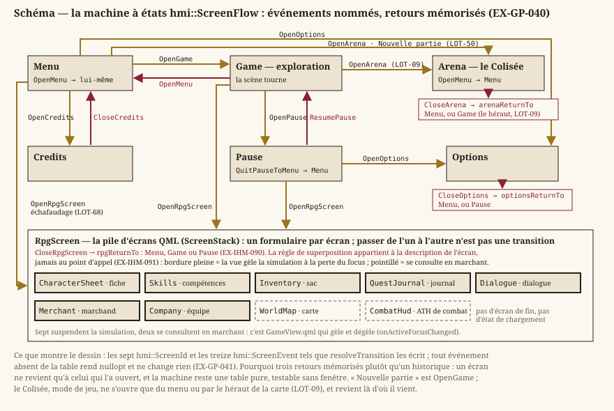

Gameplay
Statut : socle. Cette page fixe ce que toute carte et tout écran du jeu supposent : un monde en tuiles que le héros ne traverse pas, et des états de jeu explicites. Le gameplay du RPG lui-même est décrit ailleurs — l'exploration dans
exploration.md, les règles dansregles-d20.md, le personnage dansrpg.md, le combat danscombat.md. Dépend devision.md.
1. Monde en tuiles
Une carte est une grille de tuiles ; chaque case porte un type (core::TileType) : le vide, la matière pleine, l'entrée, et le vocabulaire de terrain du RPG (EX-EXP-005). Le format qui la décrit est dans niveaux.md.
- EX-GP-001 — Une carte doit être représentée par une grille de tuiles typées.
- EX-GP-002 — Une tuile solide (
core::isSolid) doit empêcher le héros de la traverser. - EX-GP-014 — Les collisions du héros avec les tuiles solides doivent être résolues sur les deux axes, sans traversée à vitesse élevée ni blocage contre un coin (
EX-EXP-002,EX-EXP-003).
Chaque règle est déterministe : à état d'entrée identique, comportement identique (EX-NFR-002).
2. États de jeu


- EX-GP-040 — Le jeu doit gérer des états distincts — menu, exploration, pause, options, crédits et écrans du RPG — portés par
hmi::ScreenFlow, avec des transitions explicites et unidirectionnelles (EX-GP-041). Les écrans du RPG sont détaillés côté interface parEX-IHM-090etEX-IHM-091. - EX-GP-041 — Les transitions entre états doivent être explicites et unidirectionnelles à chaque événement (machine à états).
3. La partie et sa sauvegarde
Le jeu est un monde persistant (vision.md, décision 3), et la démo ne sauvegarde pas encore (LOT-150, version 0.2.0). Ce qui est déjà tenu est ce que la sauvegarde aura à écrire — et rien d'autre : c'est la raison d'être d'EX-EXP-006 et d'EX-EXP-012.
- EX-GP-070 — Une partie sauvegardée est une liste de personnages (jamais un seul, décision 3) avec leurs fiches et leur inventaire, la carte et la case du héros, et l'ensemble des drapeaux de monde avec leur révision (
EX-EXP-006) ; elle s'écrit en exploration, jamais en combat. L'avancement des quêtes, l'état des entités conditionnées et les coffres ouverts ne s'y écrivent pas : ils se relisent dans les drapeaux (EX-EXP-012). Une sauvegarde qui porterait deux mémoires de la même chose se contredirait au premier changement de version du jeu. - EX-GP-071 — Une sauvegarde porte un numéro de version de format et se lit pour toujours : un fichier d'une version passée se charge, une version supérieure est refusée avec un message, et un fichier illisible n'est jamais écrasé en silence. C'est la règle du format de carte (
EX-LVL-005), appliquée au fichier que le joueur ne peut pas refaire. Portée par leLOT-150.
Exigences retirées
Ancres conservées, jamais renumérotées : les lots livrés s'y réfèrent. Chacune décrivait une mécanique que le jeu n'a pas et que le moteur ne porte plus.
- EX-GP-003 (retirée au
LOT-88) — pentes et suivi de surface. - EX-GP-004 (retirée au
LOT-88) — arrondis et suivi de surface. - EX-GP-005 (retirée au
LOT-88) — blocs poussables de taille réduite. - EX-GP-006 (retirée au
LOT-88) — pentes et arrondis de plafond. - EX-GP-007 (retirée au
LOT-88) — arrondis concaves. - EX-GP-010 (retirée au
LOT-88) — marche horizontale ; le déplacement estEX-EXP-001. - EX-GP-011 (retirée au
LOT-88) — saut. - EX-GP-012 (retirée au
LOT-88) — gravité. - EX-GP-013 (retirée au
LOT-88) — saut au sol seulement. - EX-GP-015 (retirée au
LOT-88) — sauts aériens. - EX-GP-016 (retirée au
LOT-88) — glissade et saut mural. - EX-GP-017 (retirée au
LOT-88) — ruée (dash). - EX-GP-018 (retirée au
LOT-88) — ressenti vertical du saut. - EX-GP-019 (retirée au
LOT-88) — masse et vitesse terminale de chute. - EX-GP-020 (retirée au
LOT-88) — interrupteur ; ce qui agit sur une carte est une entité (EX-LVL-017). - EX-GP-021 (retirée au
LOT-88) — porte liée à un interrupteur. - EX-GP-022 (retirée au
LOT-88) — bloc poussable. - EX-GP-023 (retirée au
LOT-88) — clé et porte verrouillée. - EX-GP-024 (retirée au
LOT-88) — budget de sauts et de ruées. - EX-GP-025 (retirée au
LOT-88) — plaque de pression. - EX-GP-026 (retirée au
LOT-88) — plateforme mobile. - EX-GP-027 (retirée au
LOT-88) — bloc descendant. - EX-GP-028 (retirée au
LOT-88) — bloc fragile. - EX-GP-029 (retirée au
LOT-88) — bloc éphémère. - EX-GP-030 (retirée en
LOT-67) — sortie qui termine un niveau : il n'y a plus de niveau à terminer. - EX-GP-031 (retirée en
LOT-67) — échec au contact d'un danger ; ce que devient la mort d'un personnage est le sujet duLOT-72. - EX-GP-032 (retirée en
LOT-67) — redémarrage d'un niveau après échec ; remplacé par la sauvegarde duLOT-17. - EX-GP-050 (retirée au
LOT-88) — danger directionnel. - EX-GP-051 (retirée au
LOT-88) — danger mobile. - EX-GP-052 (retirée au
LOT-88) — danger commuté. - EX-GP-053 (retirée au
LOT-88) — danger temporisé. - EX-GP-054 (retirée au
LOT-88) — route d'une plateforme mobile. - EX-GP-055 (retirée au
LOT-88) — capacités de saut et de ruée par niveau. - EX-GP-056 (retirée au
LOT-88) — ruée chargée. - EX-GP-057 (retirée au
LOT-88) — poussée renforcée pendant une ruée. - EX-GP-058 (retirée au
LOT-88) — chute plongeante. - EX-GP-060 (retirée au
LOT-88) — ruée suivant les pentes. - EX-GP-061 (retirée au
LOT-88) — enchaînement ruée et saut.
Traçabilité
Exploration : exploration.md. Format des cartes : niveaux.md. Contrôles : controles.md.